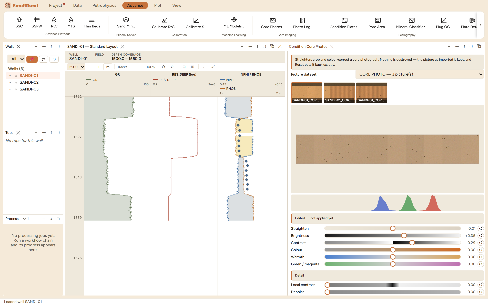

Condition Core Photos straightens, crops and colour-corrects core-box
photographs. A core photograph arrives as somebody's snapshot: the box a
degree off square, the bench and the tape in frame, and whatever colour
the core shed's lamps had that afternoon. None of that is the rock, and
all of it goes into a report and into any trace read off the picture.
Reach for it once per delivery, before Photo Log reads anything: a
darkness compared across boxes shot under two lamps is a comparison of
the lamps.
The pane

Box 1 of the example delivery after the grey-card pick and
the crop: the warm lamp cast is gone, the frame holds only rock, and
the three colour histograms sit on top of each other instead of a
channel apart.
The controls are the picture. The delivery is a filmstrip of
thumbnails; the crop is a drag on the image; the white balance is a
click on a grey patch; each slider's track carries the gradient it
moves along.
Nothing is destroyed. The picture as imported is kept, every
edit re-renders from it, and Reset puts it back exactly. The demo
used that twice after over-cropping, and the import came back byte
for byte.
Three states, not two: as imported, edited but not yet
applied, and applied ("this is what the project holds", in the
status line's own words). Only the third reaches the log view, the
composite and the PDF.
Recommend conditioning measures the photograph and proposes
values with the reason for each; on the example it staged exposure
−0.50 (median brightness 0.64 against the 0.45 a readable slab
sits at) and contrast +0.29, and declined to invent a white
balance:
No neutral surface to balance against: almost nothing in this frame is both bright and
uncoloured. Photograph the tray, a grey card or a strip of white putty in the frame, or
pick a patch by hand - a white balance guessed from rock would take the rock's own
colour out of it.
Step by step
Open Advance ▸ Core Imaging ▸ Core
Photos…, pick the delivery, and press Recommend
conditioning for a measured starting point.
Pick a grey and click the grey card (the recommender could
not, because the lamp cast had made even the card coloured; you know
it is grey, which is exactly the knowledge the click states). The
pick takes a median of the patch, and the gains are normalised so the
largest is 1, which means a white balance can only darken, so
re-raise Brightness afterwards.
Crop to the rock. The trace reads the depth range as
spanning the picture end to end, so a bench margin left in frame is
read as rock at the core's ends.
Apply to this photo, then Apply this light to the whole
run: the colour half travels to every box (one shed, one lamp,
one afternoon), the crop does not (the box sits differently on the
bench in every frame). Crop the remaining boxes individually.
Reading the result
Judge the correction on two things: the histograms, whose three
channels should collapse onto one another once the cast is gone, and
Hold to compare, which shows the import while held. On the example
the three boxes went from 2000×420 delivered frames to
1876×298 rock-only crops, each carrying the run's shared colour and
its own framing. The result is baked into the stored copy, so the log
view, the composite and the printed PDF all show the same corrected
picture; a paired ultraviolet delivery stays its own dataset and renders
with its own recipe, compared through Hold for the pair.
QC and pitfalls
Leave the Detail sliders alone before reading a trace. The
pane says it plainly: local contrast roughly halves the darkness
contrast between clean sand and mudstone, sharpening inflates the
texture measure and denoising suppresses it. They are for the eye;
Photo Log names any photograph carrying one.
White balance before brightness. The gains only darken, so
an exposure chosen on the uncorrected picture is wrong after the
pick; set the light first, then the level.
Put something neutral in the frame at the shed. A grey card
photographed with the core is a one-click correction forever; without
one, the recommender rightly refuses to balance off rock.